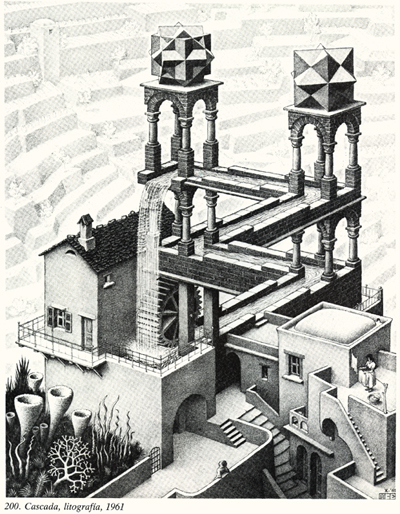
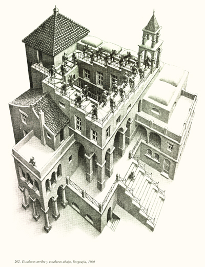
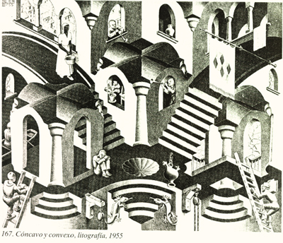

Un altre exemple en el qual els models basats en dibuixos 2D poden ser no vàlids el tenim en els dibuixos de M. C. Escher (1898 - 1972). Podeu veure un exemple del moviment continu de l'aigua
|  |
o bé unes escales que sempre pugen
|  |
o fins i tot barreges entre concavitat i convexitat
|  |
La conclusió és que si volem modelitzar i visualitzar correctament
objectes i escenes 3D, necessitem models i representacions 3D.